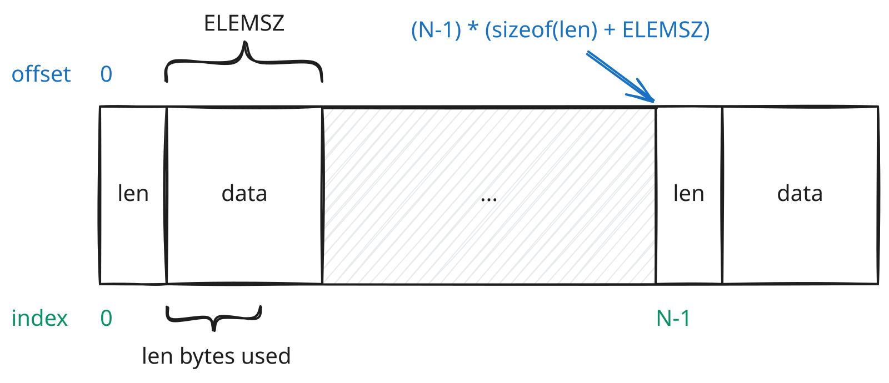
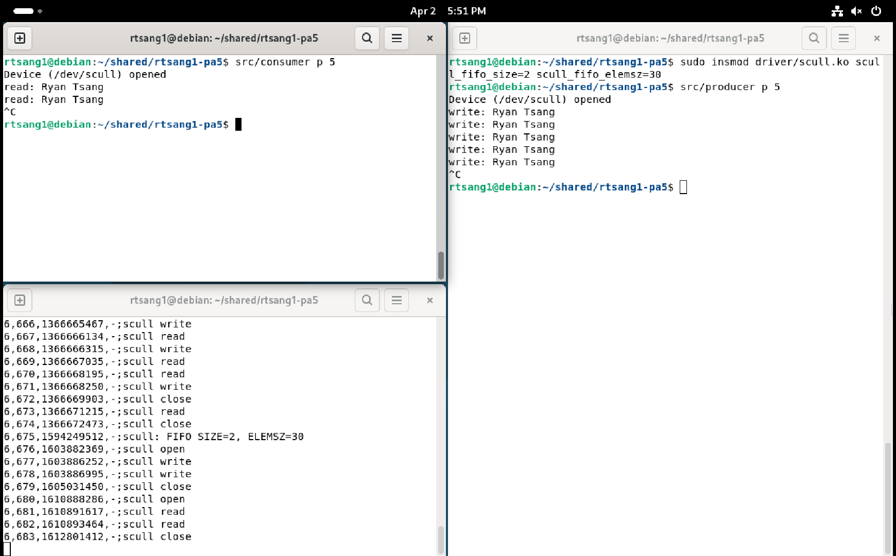
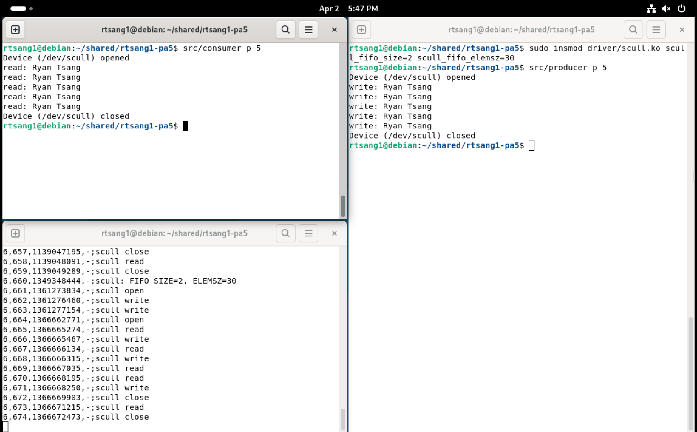

Homework 5
Due Date: Monday, 11/30/2026, 11:59 PM
Instructions
You may work together with other students on this assignment. You must list the names and
stevens.eduaddresses of anyone you work with. You are still responsible for submitting this assignment individuallyThe use of LLM-based tools on this assignment is allowed. You must document the model(s) used, (e.g. gpt5.6-sol) and how it was used (e.g. planning, coding, research on <topic>, spell-checking)
All external sources of code must be cited if used. Submitting work that is not your own without citation is plagiarism.
Your written submissions will be managed via Gradescope.
Introduction
The objective of this assignment is to implement a kernel-based first-in-first-out (FIFO) message queue by extending a barebone character device driver. This message queue can be used by multiple producers and consumers to exchange data at the same time so with this assignment you will also get more practice with synchronization primitives. Specifically, you will:
Extend a character device driver, implemented as a kernel module, to implement a FIFO message queue that supports multiple producers and consumers.
Extend a user space program to interact with the character device driver to test it.
Setup
Ensure you have the
cs492-envset up.Download the
hw5-template.zipfile and extract it to a destination of your choice.In the “scull” character device driver (inside the
driverdirectory) we have prepared one IOCTL command, which you can find in thescull_ioctlfunction of thescull.cfile.This command returns the size of a queue element (in other words, the maximum length of any message exchanged between a producer and consumer), although the queue itself is not implemented yet (this will be your job below).
The
scull.cfile also contains twoscull_readandscull_writefunctions which currently do nothing except write an informational message to the kernel log.To test the code:
Modify
MODULE_AUTHORinscull.cto indicate your own student login name.Compile the scull driver code (it is implemented as a kernel module).
Load the module into the kernel. Also check what happens at the same time in the kernel log.
Create the special character device file
/dev/scullwith the correct major number for the “scull” module (see hw4 if you do not remember how to do this).By default, the
/dev/scullpseudofile is created with root-only access permissions. To enable read and write permissions, execute the following command:sudo chmod o+rw /dev/scull(
oindicates “other users”)Compile the user-space producer and consumer programs (inside the
srcdirectory).Test the consumer and producer programs to get a feel for what they do. Also check what happens at the same time in the kernel log.
Unload the module.
Part 1: Implementing the Message Queue
Extend the “scull” character device driver (inside the driver directory) by implementing a FIFO message queue that can store up to N messages (N is called scull_fifo_size in the code), each of size ELEMSZ characters (called scull_fifo_elemsz in the code).
The provided code is written in such a way that N and ELEMSZ can be configured at module load time through module parameters (see below). Do not make any assumption in your own code about the values of N and ELEMSZ, except that you can assume that they are always positive integers.
The only limits for N and ELEMSZ should be kernel memory availability, not anything in your implementation.
Your tasks:
Allocate the message queue as a flat array of characters when the module is loaded into the kernel, and correctly free the message queue when the module is unloaded. Do not implement it in any other way. Not as a list; not as an array of structures; not as multiple arrays. Yes I am forcing you to practice pointer arithmetic.
Information on memory allocation and deallocation in the kernel can be found on kernel.org.
You must check whether your memory allocation succeeds or not; if not, you should return an error.
Because processes can store less than ELEMSZ characters of data in a given message, you will also need to store the number of characters actually written in the element.
See the Figure 1. where for example the length “len” for the first message is less than ELEMSZ, and so the “len” value needs to always be stored as part of the array, in front of the data for the message proper. The type you use for ‘len“ in your code must match the type used by the
scull_readandscull_writefunctions for the length of a message.
Figure 1: Memory model for message queue entries Since you need to use a flat array to implement a FIFO message queue, you will also need two pointers to manage this array as a circular buffer (do not use any integer type or you will lose points):
startto indicate the oldest full array element where the next (oldest) message can be read;endto indicate the oldest empty array element where the next (newest) message can be written.
Make sure these two pointers are properly initialized when the module is loaded!
Implement the
scull_read(consumer) message queue operation in the device driver.A placeholder function is already in
driver/scull.cthat currently does nothing except print a message in the kernel log. Complete this function to perform the following:- Consume the first entry in the queue and copy its data to the provided
bufparameter, or block if the queue is empty. Ifcount(the size ofbuf) is less than the available data, only copycountbytes tobufand ignore the rest. - Return the number of bytes copied to
bufif successful,-EFAULTif copying fails, or-EINVALif a parameter is invalid. f_posis unused.- Print “scull read” at level
KERN_INFOjust before the entry data is copied tobuf.
- Consume the first entry in the queue and copy its data to the provided
Implement the
scull_write(producer) message queue operation in the device driver.A placeholder function is already in
driver/scull.cthat currently does nothing except print a message in the kernel log. Complete this function to perform the following:- Produce a message by copying
countbytes frombufinto the next empty queue entry, or block if the queue is full. Ifcountis greater than ELEMSZ, only copy ELEMSZ bytes and ignore the rest. - Return the number of bytes copied if successful,
-EFAULTif copying fails, or-EINVALif a parameter is invalid. f_posis unused.- Print “scull write” at level
KERN_INFOjust before data is copied frombufto the entry.
- Produce a message by copying
Add synchronization code to
scull_readandscull_writeto ensure safe concurrent access to the message queue, as we saw in class in the concurrency lectures. Use sleeping / waking synchronization functions, not busy-waiting ones.
Part 2: Modifying the User-Space Test Programs
Modify the code of the producer (inside the
srcdirectory) to use your own name as the message rather than “Ryan Tsang” (nothing else). Note how the string is written to the message queue without the trailing\0character.Modify the code of the consumer so that it reads (and prints) the complete data from a queue element.
Part 3: Testing the Message Queue
Load the module with a large
scull_fifo_sizeand a smallscull_fifo_elemsz. Start 2 producers and then 2 consumers. For example:$ sudo insmod ../driver/scull.ko scull_fifo_size=10 scull_fifo_elemsz=3 $ ./producer p 2 Device (/dev/scull) opened write: Ryan Tsang write: Ryan Tsang Device (/dev/scull) closed $ ./consumer p 2 Device (/dev/scull) opened read: Rya read: Rya Device (/dev/scull) closedYou must provide a single screenshot that shows a terminal window that shows output similar to what is shown above (including the
insmodcommand used), followed by the output of theidcommand.Reload the module with a large
scull_fifo_sizeand a largescull_fifo_elemsz. Start 2 producers and then 2 consumers. For example:$ sudo insmod ../driver/scull.ko scull_fifo_size=10 scull_fifo_elemsz=30 $ ./producer p 2 Device (/dev/scull) opened write: Ryan Tsang write: Ryan Tsang Device (/dev/scull) closed $ ./consumer p 2 Device (/dev/scull) opened read: Ryan Tsang read: Ryan Tsang Device (/dev/scull) closedYou must provide a single screenshot that shows a Debian terminal window that shows output similar to what is shown above (including the
insmodcommand used), followed by the output of theidcommand.Open 3 terminal windows, one for showing the kernel log, one for reloading the module and starting the producers, and one for starting the consumers.
Reload the module with
scull_fifo_size=2andscull_fifo_elemsz=30.Start 5 producers and show that some of them block waiting for consumers in kernel log. Use
Ctrl-Cto kill the remaining producers.Then start 5 consumers and wait until they block. Use
Ctrl-Cto kill the remaining consumers.
Show in the kernel log that some of them print messages while the remaining consumers block waiting for producers. For example:

Figure 2: Screenshot of blocked, then killed producers and consumers. You must provide a single screenshot that shows a Debian terminal window that shows output similar to what is shown above (including the
insmodcommand used), followed by the output of theidcommand.Clear the terminal windows for the producer and consumer processes.
Reload the module with the same values for
scull_fifo_sizeandscull_fifo_elemszas in the previous test.Start 5 producers in the first terminal. When they block, do not kill the process.
Then start 5 consumers in the second terminal and allow the processes to complete.
Show that all blocked producers and all consumers then terminate, and that the reads and writes are interleaved in the kernel log. For example:

Figure 3: Screenshot of producers and consumers with interleaved reads and write You must provide a single screenshot that shows both Debian terminal windows that show output similar to what is shown above (including the
insmodcommand used), followed by the output of theidcommand (in either of the two terminal windows).You should also check that the same thing works fine if you start the 5 consumers before starting the 5 producers (no need to provide any screenshot for this).
Deliverables
For your submission, you will need to prepare a few files to upload on Gradescope:
- a zipfile containing your source code
- a written report named
report.pdf - a text file named
metadata.txt - an xz-compressed archive of all chatlog markdown files named
chatlogs.tar.xz
Source Code
You should use the provided top-level Makefile in the template archive to create a zipfile with your submission. It should generate a submission with the following structure:
Makefile
driver/Makefile
driver/scull.c
driver/scull.h
src/Makefile
src/producer.c
src/consumer.cWritten Report
You report will have 2 parts, a demo section with your deliverable screenshots, and your answers to some reflection questions (these cannot be written with AI).
Metadata
Create a text file named metadata.txt that contains the following contents:
hw: <#>
name: <name>
email: <email>
collaborators:
- <name1> (<email1>)
- <name2> (<email2>)
- <...>
ai:
- <model>:
- <usage1>
- <usage2>
- <...>
- <...>
pledge: I pledge on my honor that I have abided by the Stevens Honor System.(replace <> items)
You must follow the format exactly (it is YAML syntax)
AI Chat Logs
Follow this process for submitting AI chat logs:
Create a directory for your chatlogs named
chatlogs-hw5in your project root. Do not track this in git, as chatlogs can be massive.For each chat instance used, export the log as a markdown file (
/exportinopencode) using the following naming convention:hw<#>-task<#>-<model>-<yyyy>-<mm>-<dd>-<HHMM>.mdWhere:
hw<#>: homework numbertask<#>: homework task number you were working on (use<#+#>for multiple tasks)<model>: LLM model version string<yyyy>-<mm>-<dd>-<HHMM>: approximate timestamp when chat was saved (HHMMis 24-hour time).
In the provided environment, run:
cd chatlogs-hw5/ tar -cJvf chatlogs.tar.xz *.md
Submission
Upload all four files on Gradescope:
- source code zipfile (this is expected to automatically unzip)
report.pdfmetadata.txtchatlogs.tar.xz
YOUR UPLOADS MUST PASS THE
file_checkAUTOGRADER TEST.